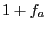

| A Manual for use of PyPedal
A software package for pedigree analysis |
| A Manual for use of PyPedal
A software package for pedigree analysis |
As an example, we will consider the NRM for the pedigree in Figure 9.1. The matrix is square and symmetric; the diagonal values correspond to 
, where  is an animal's coefficient of inbreeding; animals with a diagonal element
is an animal's coefficient of inbreeding; animals with a diagonal element  are inbred.
are inbred.
Note that the array only contains six distinct values: 0., 0.25, 0.5, 0.75, 1.0, and 1.25. These six values will be used to create the color map used by rmuller_pcolor_matrix_pil().
rmuller_pcolor_matrix_pil() produces pseudocolor plots from NRM. A pseudocolor plot is an array of cells that are colored based on the values the corresponding cells in the NRM. The minimum and maximum values in the NRM are assigned the first and last colors in the colormap; other cells are colored by mapping their values to colormap elements. In the example above, the minimum value is 0.0 and the maximum value is 1.0 (Figure 9.6). The two inbred animals in the population are easily identified as the yellow diagonal elements in the bottom-left corner of the matrix.
rmuller_spy_matrix_pil() is similar to rmuller_pcolor_matrix_pil(), but it is used to visualize the sparsity of a matrix. Cells are either filled, indicating that the value is non-zero, or not filled, indicating that the cell's value is zero. In Figure 9.7 it is easy to see the two separate families in the pedigree.| A Manual for use of PyPedal
A software package for pedigree analysis |